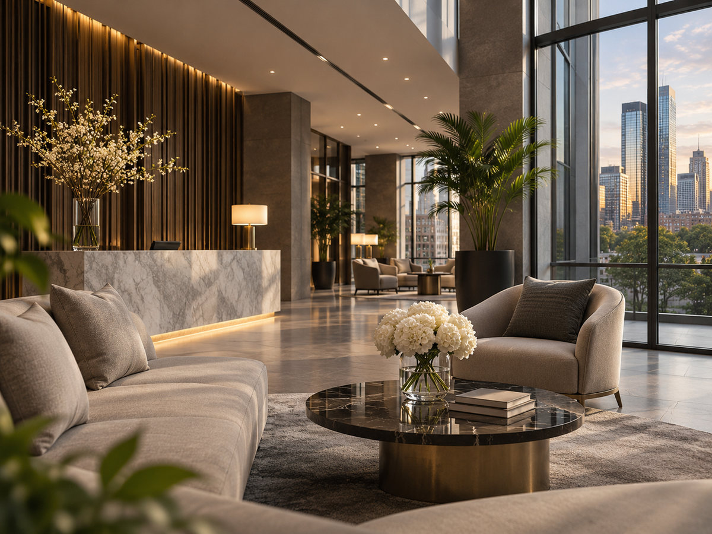
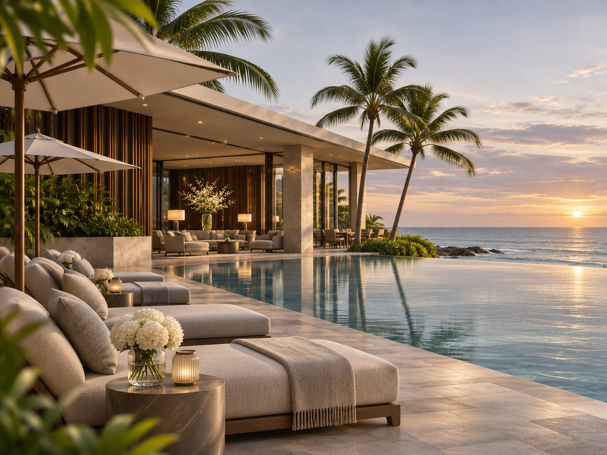
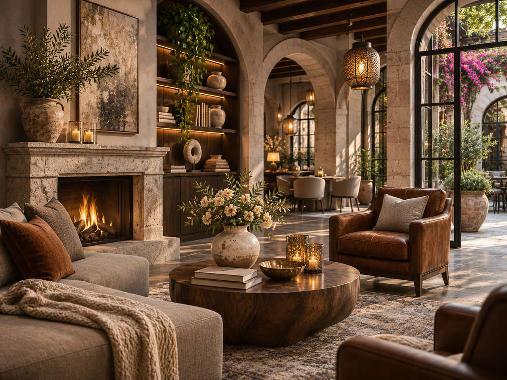
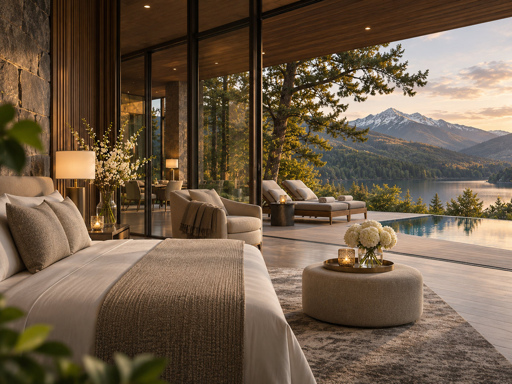

Hoteles urbanos
Comodidad y ubicación para descubrir grandes ciudades a tu propio ritmo.

JP Global Travel
Cada estadía forma parte de la experiencia. Descubre distintas maneras de alojarte y comienza a imaginar tu próximo viaje.
Desde el ritmo de una ciudad hasta la calma junto al mar, explora el estilo de alojamiento que mejor acompaña tu próxima experiencia.

Comodidad y ubicación para descubrir grandes ciudades a tu propio ritmo.

Descanso, paisajes y días para disfrutar junto al océano.

Espacios con carácter, atención cercana y detalles que hacen la diferencia.

Lugares para desconectarse, celebrar o vivir algo diferente.
Imágenes ilustrativas de estilos de alojamiento; no corresponden a hoteles específicos.
Cuéntanos dónde te gustaría alojarte. Prepararemos una propuesta personalizada según tus fechas, preferencias y estilo de viaje.
SOLICITAR COTIZACIÓN